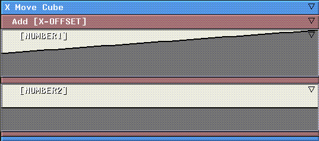
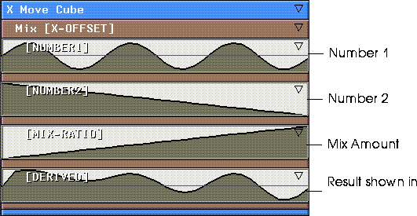
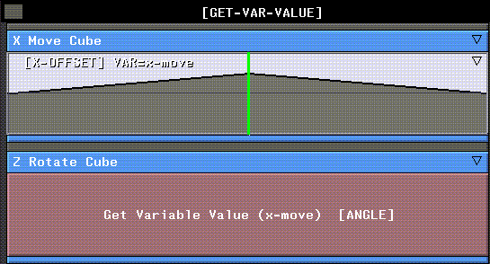
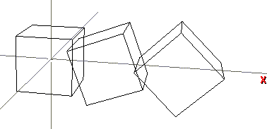
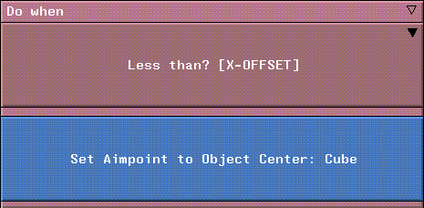
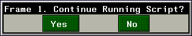
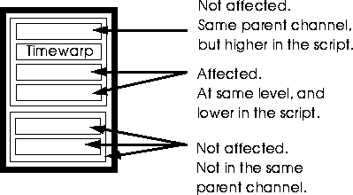
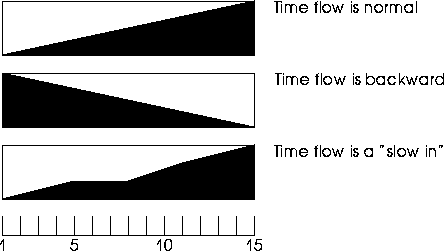

[N-World Contents] [Book Contents] [Prev] [Next] [Index]
Controlling Script Flow
In this chapter you'll learn how to use some of the "Basic" N-Dynamics functions. These operations can be used to perform mathematic functions, manipulate values in curves, control flow of a script, evaluate external LISP code, or alter the flow of time in a script to make it speed up, slow down, or even flow in reverse!
In this Chapter
You'll learn how to use some of the operations in the Basic Functions operation class.
These operations don't operate specifically on objects, materials, or images like most of the other N-Dynamics operations. Rather, they deal with the script itself, letting you perform mathematic operations on curve channels, insert decision points in a script, work with values in a channel, and more.
These operations can be divided into five different groups:
- Mathematic
- Add, Subtract, Multiply, Divide, Mix
- Values
- Get Variable Value, Print Value, Renormalize, Return Value
- Flow
- Do if then else, Do when, In Range?, Less than?, Pause, Call Script
- Evaluate LISP Form
- Evaluate a LISP form for direct programmatic access to N·World
- Timewarp
- Use the Time Warp operation to make action in a script slow down, speed up, or even flow in reverse.
In addition to the examples given in this chapter, these functions are described in more detail in the N-Dynamics Reference Guide.
Mathematical Functions
You can use N-Dynamics mathematical functions to add, subtract, multiply, divide, or mix values in different channels.
Add
The Add operation has two dynamic values. An Add operation could be inserted in place of a dynamic value for another action; for example, if you wanted an object to rotate a number of degrees equal to two dynamic values, you could set up an action that looked like this:

Figure 9.1 Using an Add action as a dynamic value
The value in the first curve would be added to the value of the second curve (at each frame), and the object would be rotated that number of degrees.
The value returned by the Add operation can also be referenced using the Channel Variable assigned to the Add channel.
You could also (CLICK-R) on either of the Number channels and use the Replace with Variable command to add the value in one curve to the value in another curve specified with the variable. See the section "Get Variable Value," on page 9-6 for more information.
Subtract
This operation is similar to the Add operation described in the add section, except that the two dynamic values are subtracted rather than added. Subtracts the value in Number 1 from the value in Number 2.
Multiply
This operation is similar to the Add operation, except that the two dynamic values are multiplied rather than added. This operation multiplies the value in the Number 1 channel by the value in the Number 2 channel.
Divide
This operation is similar to the Add operation, except that the two dynamic values are divided rather than added. This operation divides the value in the Number 1 channel by the value in the Number 2 channel.
Mix
Mixes the two values specified in Number 1 and Number 2, using the mix factor specified in Mix Amount:
To see a sample of the effect, add a derived curve to the channel, then create a Mix Amount that ramps from 0 to 1 over the length of the channel. Create a sketched sine wave curve in the first channel, and a sketched sawtooth curve in the second channel. Finally, insert a derived curve and recompute it to show how the two are mixed:

Figure 9.2 Mixing two curves and showing the result in a derived curve
Note that in the derived curve channel, more of the data from the first channel is used initially, but as the mix amount increases, data from the second channel weighs more heavily.
Working with Values
As described at the beginning of this book, a curve channel holds data. You can assign a variable to a channel in one operation and use the data in that curve to drive another operation.
Get Variable Value
The Get Variable Value retrieves the specified variable's value and uses it to drive the current operation. You'll use the Get Variable Value in place of a simple dynamic curve channel, as described below:
1. Create a cube.
2. Create a script with two channels.
3. (CLICK-M) on the first channel.
4. (CLICK-L) on Operation>Geometry>Translation>X Move.
5. (CLICK-L) on Object and select the cube.
6. (CLICK-L) on Do It.
7. (CLICK-M) on the curve channel for the operation.
8. Enter a Channel Variable name.
- Use something that tells you where it came from, such as x-move.
9. Insert a cue at frame 15 of the script and give it a value of 50.
10. (CLICK-M) on the second channel.
11. (CLICK-L) on Operation>Geometry>Rotation>Z Rotate.
12. (CLICK-L) on Object and select the cube.
13. (CLICK-L) on Do It.
14. (CLICK-R) on the curve channel.
15. (CLICK-L) on Replace>Replace with Action.
- An action of type No Name is inserted.
16. (CLICK-M) on the channel, then (CLICK-L) on Operation>Basic Functions>Get Variable Value.
17. In the Variable field, enter x-move (or whatever name you used for the variable above).
18. (CLICK-L) on Do It.
- Your script should look something like this:

Figure 9.3 Using a Get Variable Value operation
19. (CLICK-L) on the Animate button.
- As the cube moves along the X axis, it rotates the same number of degrees. This is because it is using the same value in the curve you gave a variable name above.

Figure 9.4 Cube animated using Get Variable Value
If you wanted the rotation of the cube to still be tied to the translation of the cube (e.g., it spins more the further away it gets), you could use the Get Variable Value operation in conjunction with one of the other mathematic operations such as Add, Subtract, Multiply, or Divide.
Print Value
Prints the value of the specified value to the Nichimen Message window. This is useful if you just want a convenient way of tracing the value of a variable.
To use this operation:
1. (CLICK-M) on the channel whose value you want to print.
2. Assign the channel a variable.
3. Add a Print Value operation.
4. (CLICK-M) on the Print Value operation.
5. Specify the name of the variable whose value you want to print.
Return Value
This operation does nothing more than return a value based on the content of its subchannels. This channel is normally inserted as a parent channel around a series of sequential curves (since they must be contained in a channel, and by default they do nothing more than return a value).
For example, you could also use this operation if you wanted all your operations to use the same curve data. You'd add a Return Value channel (or several), assign them variable names, then in operations requiring a curve, you could replace the curve with a Get Variable Value operation and specify the variable name assigned to the curve in the Return Value operation.
Renormalize
The Renormalize function converts values between one range (say 0 to 1) and into values between another range (say 0 to 20).
1. Load the following script:
/usr/local/ngc/demo/scripts/renormalize
- The Set View channel positions the camera.
- The second channel contains raw data between the ranges of 0-1. If you are creating a script like this, give the channel a variable name-(CLICK-M) on the curve channel and specify a Channel Variable (e.g., "grow").
- The third channel is a Scale Cube operation. When you create this channel, by default, a dynamic curve channel is inserted. (CLICK-R) on this curve channel and select the Replace with Variable command. This converts the curve into a Get Variable Value channel. When prompted, enter the name of the variable specified for the curve channel in step 2 above. You must also (CLICK-L) on the Subchannel ID field for this channel, and select INPUT from the pop-up.
2. (CLICK-R) on the Get Variable Value channel and choose Insert Parent.
3. Choose an operation type of Renormalize.
4. (CLICK-M) on the Renormalize channel.
- Input Min and Input Max specify the lowest and highest values for that will be normalized. Output Min and Output Max specify the new range for values between Input Min and Input Max.
- For example, if you specify input values of 0 and 1 for min and max, and output values of 0 and 20 for min and max, 0=0, .5=10, and 1=20. Also, values less than 0 are clipped to 0, and values greater than 20 are clipped to 20.
5. The fourth channel is a make visible for the default cube.
- The "renormalize-2" script is similar to the "renormalize" script, except that the curve data is a subchannel of the operation it is being used for.
- This is similar to the "renormalize" script, except you do not need to specify a variable for the curve channel. You do have to specify a Subchannel ID of INPUT so that the data gets passed to the Renormalize operation properly.
Directing the Flow of a Script
There are several operations that let you control the sequence in which channels are executed.
Call Script
Calls the specified dynamics script from within the current script. If you are coordinating a large number of complex motions in your script, you may find it useful to animate the motions in individual scripts, then create a "main" script which calls those other scripts as appropriate.
For example, if you created a main script to do the bulk of your animation, then created a second script to animate the walk cycle for a character, you could simply call the walk cycle script whenever you wanted to use it.
Modularizing the script this way can make debugging your animation easier.
For example, if you found an error in the walk cycle script, you could simply make a change to it, then reanimate the main script, and the motion would be corrected every place the walk cycle script was called.
In Range?
This is a conditional operation, typically used as a test case with the operations Do if then else and Do when.
In Range? checks to see if a variable or result is within a certain range. If Value is between Min and Max, the operation returns a true result, if not, it returns a false result.
Less than?
This is a conditional operation, typically used as a test case with the operations Do if then else and Do when.
Less than? tests the value in Number 1 against the value in Number 2; if Number 1 is less, the operation returns a true result, if not, it returns a false result.
Do if then else
This is used if you want things to happen only under certain conditions. For example, if you want an object to rotate as it gets within a certain distance of an object and want it to scale it when it gets a certain distance away from an object, you can set it up with a Do if then else operation. Here's an example:
1. Create a Cube.
2. Create a script with two subchannels.
3. (CLICK-M) on the first subchannel and choose X-Move for the operation and Cube for the object.
- Set up the values so that it moves from -30 to 30 and set the Channel Variable for the channel to be called "x-pos"
4. (CLICK-M) on the second subchannel.
5. (CLICK-L) on Basic Operations>Do if then else.
6. (CLICK-R) on the Do if then else channel, then (CLICK-L) on Add Parallel Subactions.
- Add 3 subactions. (The first channel will be the If condition, the second will be the Then result and the third channel will be the Else result.)
7. (CLICK-M) on the first Do if then else subchannel.
8. (CLICK-L) on Basic Operations>Less-Than?
- Set Number2 to be 0.0, then (CLICK-L) on Do It.
9. (CLICK-L) on the Less-Than? channel, then (CLICK-R) on the curve.
- (CLICK-L) on Replace with Variable, then type in x-pos for the variable.
10. (CLICK-L) on Do It.
- This operation will get the value from the X-Move of the Cube for each frame and see if it is less than 0).
11. (CLICK-M) on the second Do if then else channel and set it up to do a Y-Rotate on the Cube, then set start and end values for the rotate.
- This is the then clause. If the cube's position is less than 0.0 then it will Y-Rotate the Cube.
12. (CLICK-M) on the third Do if then else channel and set it up to do a Y-Scale on the Cube, then set start and end values for the scale operation.
- This is the else clause. If the cube's position is not less than 0.0, it will Y-Scale the Cube.
Do when
This is similar to the Do if then else operation above, except that actions are only performed only if the result of the test channel is true.

Figure 9.5 A typical Do when operation
You can add multiple actions to be performed either by grouping them in the first subaction immediately after the test channel, or adding them at the same level.
Pause
Temporarily pauses the execution of a script. When a Pause operation is encountered the following dialog box is displayed:

Figure 9.6 Pausing a script
Pause is useful if you want to perform some manual operation at the same point for each frame in a script, then resume execution of the script.
- Note. All other N·World products are still active when the script is paused.
Evaluating a LISP Form
The Evaluate LISP Form operation is your programmatic interface into N-Dynamics. You can evaluate any LISP form "on the fly," giving you interactive access to the Wide Open World API. See the N·World Programmer's Reference Guide for more information.
Applying a Timewarp to a Script
Make Time Flow Backward
Timewarp sets a curve that affects the apparent flow of time in a script. For example, if you have a script that manipulates a number of objects, and wanted to slow down the entire animation at the beginning, you could apply a Slow-In curve to the entire script by using Timewarp.
In order to do this, add a channel to hold the Timewarp operation at the top of the script. The script affects all channels below it in the same parent channel:

Figure 9.7 Placing a Time Warp operation
Consider the two "extremes:"
As each frame executes, N-Dynamics passes a value to each channel from top to bottom, telling it the current frame. When it encounters a Time Warp channel, that value is temporarily replaced by the value in the time warp curve. The value of the curve at that frame tells N-Dynamics what frame to execute for any affected channels (as described above).
So in the second example below, at frame 1, the value in the curve is 1. This means that N-Dynamics now thinks it should execute the frame at 100% of the length of the channel. The next frame is a slightly lower value (say 95%), so the frame corresponding to that percentage of the length of the time warp channel would be executed.

Figure 9.8 Sample Time Warp
Congratulations!
You've now learned about some of N-Dynamics "basic" operations. These operations let you directly control things like script flow, copying values between operations, and even changing the time warp for an entire script.
[N-World Contents] [Book Contents] [Prev] [Next] [Index]
 Another fine product from Nichimen documentation!
Another fine product from Nichimen documentation!
Copyright © 1996, Nichimen Graphics Corporation. All rights
reserved.